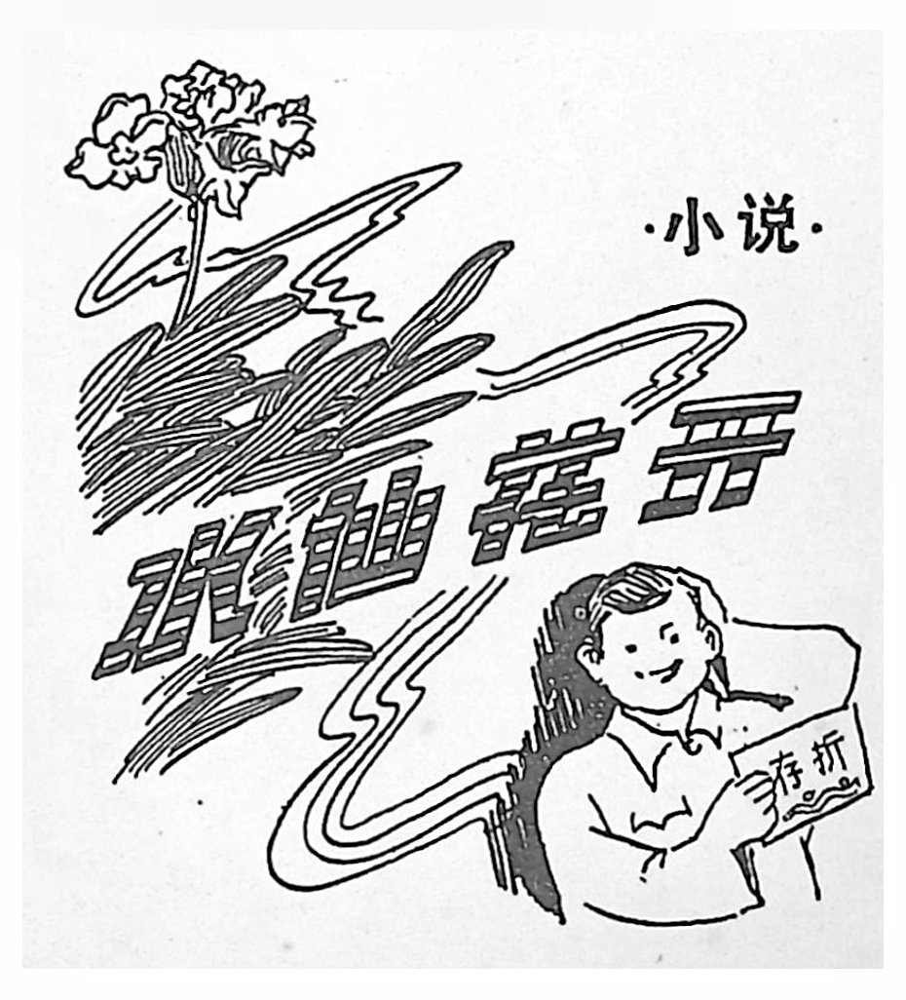

佚名 《人事》1988年第9期（总第36期），封三
水仙花开（题图）
The Narcissus Blooms (title drawing)
- Text in the drawing
- 小说 / 水仙花开 / 存折
Short story / The Narcissus Blooms / Bank passbook - Passage illustrated
另外，近日各家银行竞争剧烈，行里已给各人下达了上门吸储的任务，我这个当行长的亦不例外，正好，你是个送上门来的储户，真该多谢你的合作。现将折子随信奉还，请查收！
Furthermore, competition among the banks has been fierce lately, and the bank has given everyone a quota for bringing in deposits door to door; as deputy director I am no exception. As it happens, you are a depositor who came to my door, and I must thank you for your cooperation. I return the passbook herewith — please check it!From the short story 水仙花开 (“The Narcissus Blooms”) by Chen Le, on the same page. 陈乐《水仙花开》（小说），同页
- Description
- Title drawing for the story: a young man smiles down at the bank passbook in his hand, under the swirling title and a narcissus in bloom.
- Note
- In the story Xiao Yao, advised that “money makes the devil turn the millstone,” leaves a 500-yuan red envelope at a bank deputy director's house to get a transfer. He gets the transfer — and a letter returning the money as a savings deposit in his own name, since every bank officer has a quota of new deposits to bring in.
- Artist
- Unattributed 佚名
- Published in
- 《人事》1988年第9期（总第36期）, inside back cover
- Themes
- Gifts and banquets · Connections (guanxi) · Jobs and assignment · Story illustrations

Cite
Unattributed, “水仙花开（题图）” [The Narcissus Blooms (title drawing)], Renshi (Personnel) 《人事》, 1988, no. 9, inside back cover.